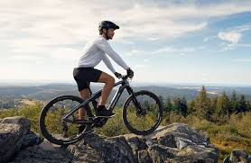

mundo do ciclismo
>caindo de paraquedas aqui?
Corre, e vem mergulhar um pouco no mundo das bicicletas!!!!!!!
Comprar uma bicicleta pode ser uma das melhores decisões que você já tomou, e aqui está o porquê:
- Melhora a saúde e o bem-estar: Andar de bicicleta é uma ótima forma de exercício e pode ajudar a
melhorar sua saúde cardiovascular, aumentar a resistência física e reduzir o estresse.
- Economiza dinheiro: Uma bicicleta é uma opção mais econômica do que um carro ou transporte
público, especialmente se você usa para pequenas distâncias. A manutenção é relativamente
simples e barata, o que significa que você pode economizar dinheiro em longo prazo.
- Ecologicamente correto: Andar de bicicleta é uma forma sustentável de transporte, pois não
produz poluição e reduz a sua pegada de carbono.
- Mais liberdade: Com uma bicicleta, você pode ir a qualquer lugar a qualquer hora, sem depender
de horários de transporte público ou trânsito congestionado. Você pode desfrutar da paisagem e
do ar fresco enquanto se desloca.
- Diversão e aventura: Andar de bicicleta pode ser muito divertido e uma ótima maneira de explorar
novas áreas e experimentar novas aventuras. Há muitos passeios organizados, trilhas para
mountain bike, e grupos de ciclistas para participar e aproveitar ao máximo sua bicicleta.
Todos os direitos reservados